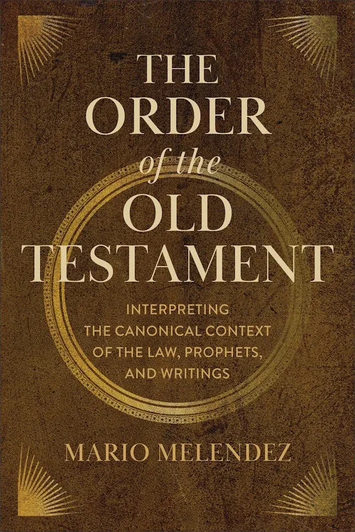

New Academic Theology to Watch
The heavier end of the shelf — monographs, commentaries and collected essays coming this autumn. Not everything here is for everyone, and that is rather the point.
Every purchase supports independent bookstores.

Classical Theology for the Modern Mind
Trueman on why remembering history, reciting creeds and studying the classical tradition is not antiquarianism but survival. See the book →

Reformation and Tradition
Does the Reformation stand against the church’s ancient tradition, or grow out of it? Collected essays on the legacy of Nicene theology. See the book →

Justification and the Churches
A careful, pastorally framed account of how Protestant, Roman Catholic and Orthodox traditions actually differ on justification. See the book →

Joshua
A full commentary from a veteran Reformed Old Testament scholar and archaeologist, opening Eerdmans’ new Pillar Old Testament series. See the book →

The Gospels Are Reliable History
Keener brings genre and memory studies to bear, arguing the Synoptics function as ancient biographies and behave like it. See the book →

The Order of the Old Testament
Six approaches to how the Hebrew Bible is arranged, and a case that the shape of a canon is a theological question, not only a historical one. See the book →

The Biblical Canon
The canon as a theological reality God gave rather than a historical artifact the church stumbled into. See the book →

The Westminster Confession of Faith
Essays from Reformed Theological Seminary faculty, assembled as a single-volume guide to the Confession. See the book →